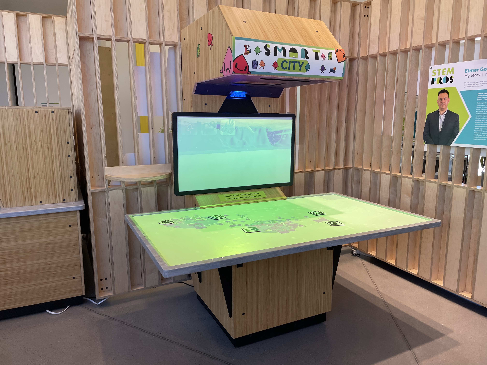
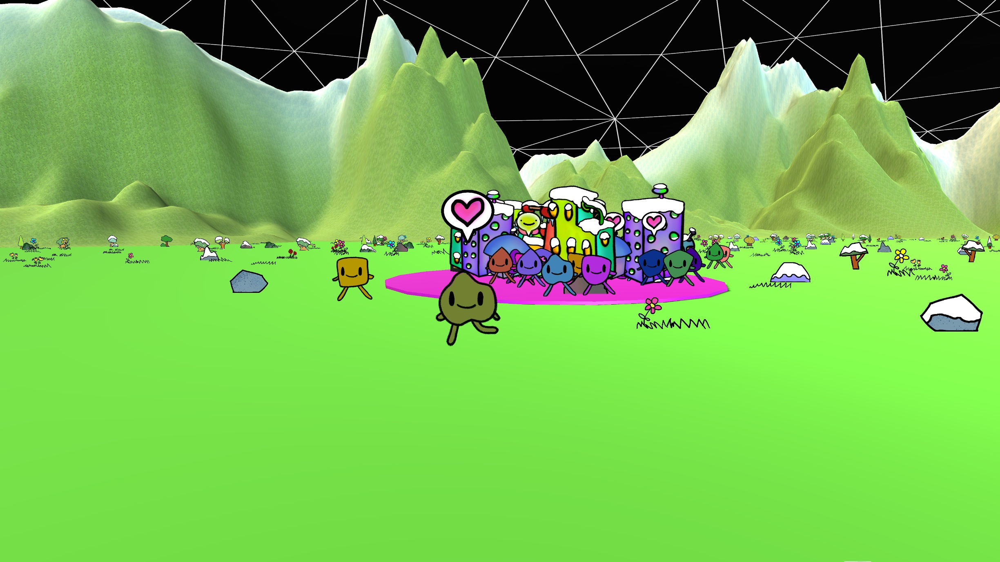

Exhibits
Here are some of some of our recent works we created for the Explora children's science center in Albuquerqe, New Mexico.
SMART City - 2023
overview:
As part of the EPSCoR grant for funding science education and future energy grid technology, we designed and created a mixed-realty interactive table for Explora's new STEM wing.

Museum visitors can place down game pieces containing AR codes that generate cities and power plants.
Cities grow while they are powered, and their denizens give positive feedback. Each generator type interacts with weather differently, and players experiment with balancing different methods of power generation to learn about diverse and resilient power grids.

proposal and learning goals:
Explora invited us to propose a collaborative and engaging exhibit for teen audiences for their new STEM wing in the museum.
We designed our game with Explora's exhibits philosophy in mind, that visitors should be able to explore hands-on and learn from each exhibit without relying on complex explanations or walls of text. We utilized tactile mixed-reality interactions to keep the game approachable for all age groups while providing the opportunity to for people to engage with SMART concepts such as sustainable power sources, transactive power grids, and future battery technology to mitigate blackouts.

One of our key goals was to create an experience that did not use written words to explain concepts in the game. We focused on only comunicating visually and sonically in order to keep the gameplay organized and appealing for all age groups.
We were excited to be able to conduct several feedback workshops with the museum's teen interns during the conceptual phase of the project. This allowed us to take the exhibit's gameplay and aesthetics in the direction most applicable to our target audience while still communicating the core learning goals of the EPSCoR SMART Grid Center.

the technology:
The buildings projected on the table are projection-mapped to the game pieces, and a secondary projection screen shows the current weather and a 3D flythrough of the city.
A camera mounted above is connected to a computer under the table that runs a playful simulation of a modular power grid that reacts to the weather and powers the neighborhoods of cute city-dwellers.
The SMART City's design uses two projectors, a camera, and a computer. The table and cabinet we built for Explora is one possible configuration, but we intentionally utilized projectors (rather than screens) so that the exhibit could be easilly installed in new configurations in the future.
A future version could utilize multiple projectors and create an immersive view of the city on large walls, or even make use of magnets to allow the game to be played on a wall instead of on the table. If you have any cool ideas or want to install a SMART City exhibit at your location, don't hesitate to contact us. Artific3 can make a version to suit your location's needs.

Selfie Station - 2022
We created an augmented reality STEM careers photo booth at Explora for their new STEM wing.
We utilized an Xbox Kinect infared sensor to track users movements and pose, and used the data to generate 3D costumes based on future careers.

Visitors can visualize themselves in fully animated real-time 3D modeled costumes of various future STEM careers. We designed costumes for jobs including laser technician, water administration scientist, coder, solar panel technician, and others often related to other exhibits in the museum.

After the user takes a picture, they can choose to send it to a wall of virtual picture frames that cycle through recently taken pictures.

Contact Us
Please don't hesitate to contact us if you have any interest in working together on a project, comissioning a new or existing work or exhibit design, or general questions and inquiry. Visit our contact page for details.
If you'd like to see more examples of work done by Artific3 and our artists, check out our showcase page for details.
(PAGE STILL UNDER CONSTRUCITON)